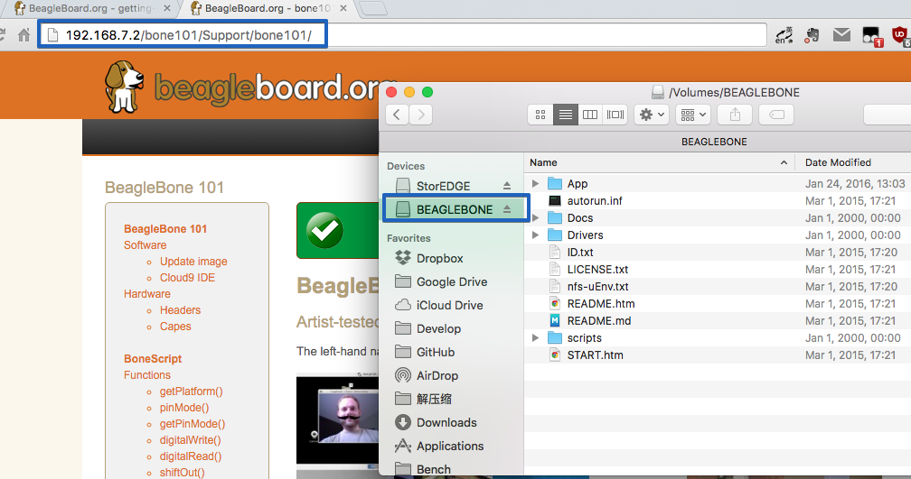
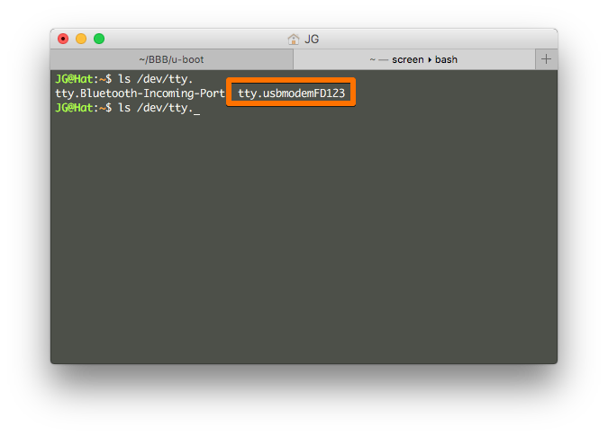
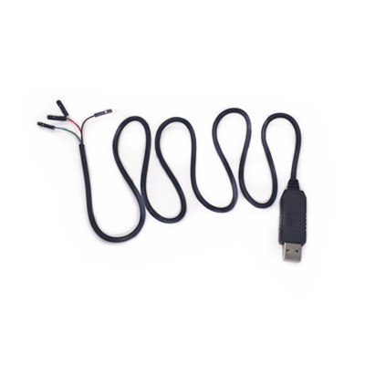
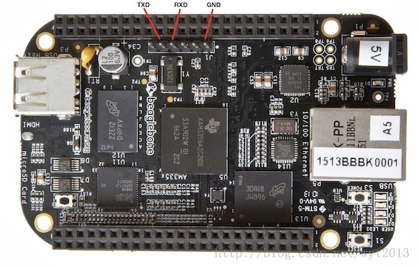

买了个 BeagleBone Black 准备从底层到应用层把整个 Linux 开发流程过一遍，并写一系列教程。

硬件组成


还是在学习 EtherCAT 的时候了解到 AM335x 这块芯片，它带有可编程实时单元子系统和工业通讯单元子系统 (PRU-ICSS)，可以做一些实时性的工作，也可以开发相应的现场总线应用。
环境搭建
不管是在 Windows 上还是在 OS X 上做 Linux 开发，还是建议大家用虚拟机搭建一个 Linux 平台，这样可以在开发中节省很多时间，具体可以看这篇《建立一个便捷高效的嵌入式 Linux 开发环境》。
OS X 下驱动安装
按照官网的教程安装驱动后有的时候会出现还是识别不了 Beaglebone 的情况。这个时候需要按以下步骤来：
- 安装 HoRNDIS-rel7 驱动，目前 release 7 是最新的。
- 重启 OSX
- 进入命令行，运行以下命令：
sudo rm -rf /System/Library/Extensions/HoRNDIS.kext
sudo rm -rf /Library/Extensions/HoRNDIS.kext
- 安装 HoRNDIS-rel8pre1.pkg
- 重启 OSX
现在插上 USB 可以见到 Finder 里面会出现外置移动设备，并且浏览器可以通过地址 http://192.168.7.2 访问 BeagleBone，如下图：

通过 Terminal 访问 BeagleBone
安装好驱动并且连接上 USB 后，可以在 /dev/ 文件夹看到 USB 转 TTY 设备：

并且我们可以通过 screen 命令 访问 tty 设备，命令如下
screen /dev/tty.usbmodemFD123
又或者，我们可以通过 BeagleBone 上面的串口访问，我们需要一根 USB 转 TTL 的线连接 BeagleBone：
 
线序定义：红+5V, 黑GND, 白RXD,绿TXD
USB-TTL与BB-Black连接方法是： USB-TTL <—> BB-Black TXD<——->RXD RXD<——->TXD GND<——->GND
同样的，我们会在 /dev/ 目录下发现一个 tty.usbserial 设备，并且可以通过 screen /dev/tty.usbserial 115200 命令访问。
至此，我们已经初步打通了电脑和 BBB 的连接。